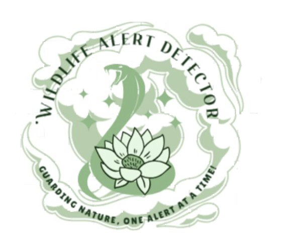

<ion-content>

  <!-- Existing content here -->

  <ion-app>
    <!-- This one is for the menu inside after clicking on the menu button -->
    <ion-menu  contentId="main-content"> <!-- this shows the physical look of the menu button -->
      <ion-header color="tertiary" >
        <ion-toolbar color="tertiary">
          <ion-title style="font-size: 40px;">Menu Content</ion-title>
        </ion-toolbar>
      </ion-header>
      <ion-content color="tertiary" style="font-size: 25px;" class="ion-padding" >
        <br>
        <hr>
        <span><ion-icon name="notifications-outline">  </ion-icon>
        <a class="darkgreenText" href="tabs/tab1">  Alert and Notifications</a>
      </span>
      <hr>
      <span>
      <ion-icon name="settings-outline">  </ion-icon>      
        <a class="darkgreenText" href="tabs/tab2">  Settings</a>
      </span>
      <hr>
      <span>
        <ion-icon name="person-outline">  </ion-icon>      
        <a class="darkgreenText" href="tabs/tab3">  Profile</a>
      </span>
      <hr>
      <span>
        <ion-icon name="clipboard-outline"></ion-icon>        
        <a class="darkgreenText" href="tabs/alert-history">  Alert History</a>
      </span>
      <hr>
      <span>
        <ion-icon name="people-outline"></ion-icon>        
        <a class="darkgreenText" href="tabs/community">  Community</a>
      </span>
      <hr>
      <span>
        <ion-icon name="information-circle-outline">  </ion-icon>      
        <a class="darkgreenText" href="tabs/aboutus">  About Us</a>
      </span>
      <hr>
    </ion-content>
    </ion-menu>
    
    <div class="ion-page" id="main-content">
      <ion-header>
        <ion-toolbar color="tertiary ">
          <ion-buttons class="large-menu-button" slot="start">
            <ion-menu-button></ion-menu-button>
          </ion-buttons>
          <ion-title  style="font-size: 2em" class=" text-3xl font-bold align-center font-kalam">About Us</ion-title>
          <ion-buttons slot="end">
            <a [routerLink]="['/tabs/tab3']">
              <ion-avatar class="toppic">
                
              </ion-avatar>
            </a>
          </ion-buttons>
        </ion-toolbar>
        <hr>

        <ion-content class="my-background1" [fullscreen]="true">

          <ion-card color="success" style="border-radius: 1%;" class="greenmuda-border1">

            <ion-avatar class="Pfp">
              
            </ion-avatar>
            <h1 class="font-bold font-kalam darkgreenText align-center">WILDLIFE ALERT DETECTOR</h1>
            <br>
            <br>
            <p class="font-italic font-kalam font-bold darkgreenText">This app was from a planning an idea of an assignment which was developed into making an actual functional app of how I would visualize the application to look like.
<br>
<br>
              It focuses on guiding and helping users to be alerted about wildlife when detected and knowing the ways on how to deal with them when the time comes.
              <br>
              <br>
              Creator Information:
              <br>
              Full Name: Mohammad Izzul Faris Bin Haji 
              Zulkiffli
              <br>
              Phone Number: +673 823 8020
              <br>
              Email: fariszlk&#64;gmail.com</p>

          </ion-card>

</ion-content>
      </ion-header>
     
    </div>
  </ion-app>
</ion-content>